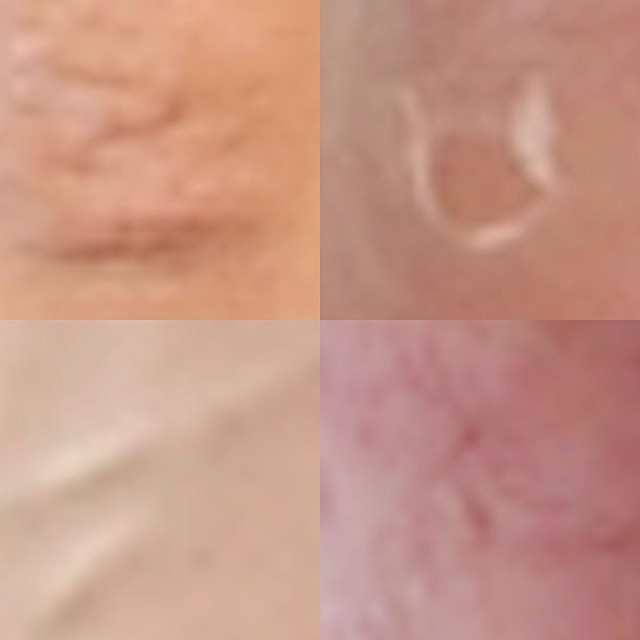

Instant Perfector
2014
A short project made for a @TagTagTagMag Instagram residency, while working as a commercial retoucher.


A short project made for a @TagTagTagMag Instagram residency, while working as a commercial retoucher.